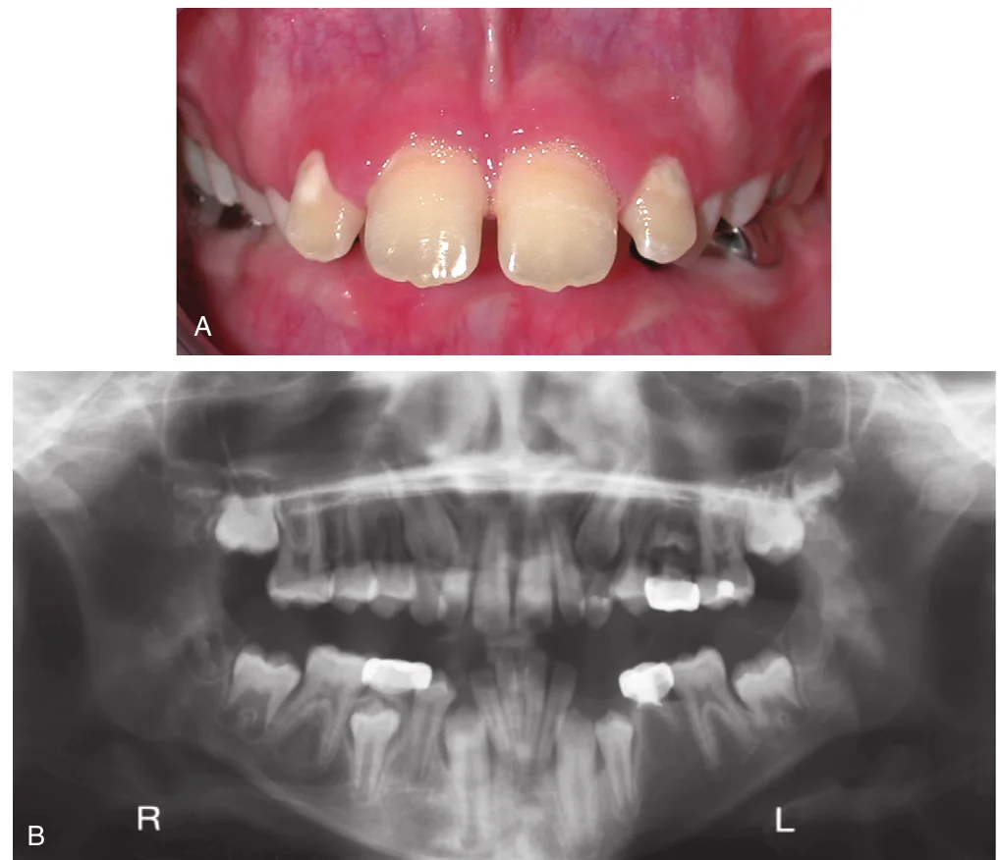

نسخه استخراجشده؛ ترجمه یا تأیید علمی انجام نشده است. وضعیت: captured
از ۶ تا ۱۲ سالگی، دو اتفاق موازی رخ میدهد: دندانهای شیری میافتند و دائمیها میآیند.
این دوره سه فاز دارد:
فاز استراحت را دستکم نگیر. از نظر بالینی آرام به نظر میرسد، ولی دقیقاً همین بازه است که پنجرهی پیوند آلوئول در بیمار شکاف و مداخلهی زودهنگام کانین نهفته در آن باز میشود. پایش رادیوگرافیک در این فاز، بیشترین بازده را دارد.
اگر در حدود ۱۰ سالگی برجستگی کانین بالا در وستیبول لمس نشد، رادیوگرافی بگیر. کشیدن بهموقع کانین شیری بالا (حدود ۱۰ تا ۱۱ سالگی) در بسیاری از موارد مسیر کانین دائمیِ جابهجاشده به پالاتال را اصلاح میکند — به شرط آنکه در قوس فضای کافی باشد.
مجموع عرض کانین و دو مولر شیری، از مجموع عرض کانین و دو پرمولر دائمی بیشتر است. این اختلاف را فضای لیوی مینامیم.
| فک | هر سمت | مجموع |
|---|---|---|
| بالا | حدود ۱٫۵ میلیمتر | حدود ۳ میلیمتر |
| پایین | حدود ۲٫۵ میلیمتر | حدود ۵ میلیمتر |
این اعداد میانگیناند و در هر بیمار باید اندازهی مولرهای شیری و پرمولرها را در پانورامیک سنجید. این فضا فقط یک بار در دسترس است: اگر حفظش نکنی، با افتادن مولرهای دوم شیری، مولر اول دائمی به مزیال میرود و آن را پر میکند.
فضای لیوی دو کاربرد رقیب دارد و باید آگاهانه میانشان انتخاب کنی: صرف رفع کراودینگ قدامی، یا صرف جابهجایی مزیالی مولر پایین برای تنظیم رابطهی مولری از همسطح به کلاس I. هر دو را با یک فضا نمیشود انجام داد؛ اگر فضا صرف کراودینگ شود، اصلاح رابطهی مولری به رشد مندیبل وابسته میماند.
برای نگهداشتن این فضا در قوس پایین، قوس لینگوال را پیش از افتادن مولر دوم شیری بگذار. اگر کمبود فضا بسیار بیشتر از لیوی باشد، پس از آنالیز دقیق فضا کشیدن سریالی مطرح میشود.
ابعاد قوس هم در این دوره تغییر میکند: عرض بینکانینی پایین تا حدود رویش کانینهای دائمی زیاد میشود و پس از آن ثابت میماند یا کم میشود، و طول قوس در گذر به دنتیشن دائمی کاهش مییابد. به همین دلیل، گشاد کردن عرض بینکانینی پایین در درمان ناپایدار است و معمولاً برمیگردد.
در حدود ۸ تا ۹ سالگی، انسیزورهای مرکزی بالا با دیاستم و تاجهای واگرا رویش میکنند و والدین نگران میشوند.
چرا؟ چون کانینهای دائمی نهفته به ریشهی لترالها فشار میآورند و تاجها را از هم دور میکنند.
✅ این وضعیت طبیعی و گذراست — با رویش کانینها خودبهخود برطرف میشود. توضیح دادن همین یک جمله به والدین، از درمان بیمورد جلوگیری میکند.
⚠️ اما دو استثنا: دیاستم بیش از ۲ میلیمتر، یا دیاستم همراه با فرنوم ضخیم و اتصال پایین. در این موارد رادیوگرافی لازم است — هم برای رد کردن مزودنس و هم برای بررسی موقعیت کانینها. مداخله، اگر لازم شود، پس از رویش کانین انجام میشود نه پیش از آن.
